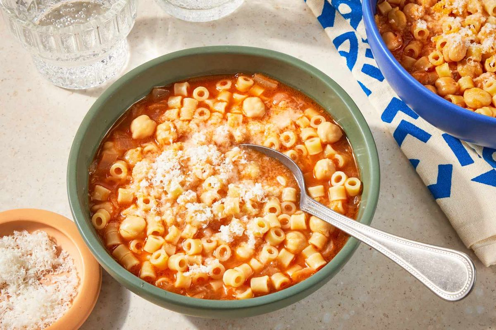

Pasta e Ceci

- Meal
- Dinner
- Serves
- 6
- Protein
- legume
- Cook
- stovetop · 20 min active / 40 min total · easy
- Make-ahead / leftovers
- no / yes
- Mediterranean
- yes
- WW tier
- moderate
- Status
- Trying out (probation)
Roman chickpea-and-pasta stew in a cooked-tomato broth — the tomato-night pasta that isn't spaghetti and meatballs and isn't lentil bolognese. Smash some chickpeas for a creamy pot without cream.
Ingredients
- 1/4 cup olive oil, plus more for drizzling
- 1 medium yellow onion, finely chopped
- 4 cloves garlic, smashed
- 1 tsp dried rosemary (or 2 fresh sprigs, pulled out before serving)
- 1/2 cup water (or dry white wine if already open)
- 3 cans (15 oz) chickpeas — drain 2 cans; leave 1 undrained
- 1 can (15 oz) crushed tomatoes
- 6 cups vegetable or chicken broth, plus more as needed
- 12 oz ditalini, small shells, or elbow pasta
- 1 tsp kosher salt, divided, plus more to taste
- 3/4 cup grated Parmesan, plus more to serve
- Optional: 1 Parmesan rind, in the pot while it simmers
- Optional: baby spinach, a few handfuls, wilted in at the end
Method
- Heat the olive oil in a large pot over medium. Add the onion, garlic, rosemary, and 1/4 tsp salt. Cook, stirring, until the onion is soft and fragrant, about 6 minutes — don't brown it.
- Add the water, raise the heat to medium-high, and cook 2 minutes until slightly reduced. Fish out the rosemary sprigs if you used fresh.
- Stir in all the chickpeas (drained + the undrained can), crushed tomatoes, broth, Parmesan rind if using, and remaining salt. Bring to a boil, then reduce to medium and simmer 10 minutes.
- Scoop out about 1 cup of the chickpea mixture, mash it with a fork, and stir it back in.
- Return to a boil. Add the pasta and cook, stirring often, until just al dente (check the box). Add a splash more broth or water if it gets too thick — you want stew, not wallpaper paste.
- Off heat, discard the rind. Stir in 3/4 cup Parmesan. Wilt spinach in now if using. Ladle into bowls, drizzle with olive oil, pass more cheese.
Notes
- Scaled from Simply Recipes (2 cans chickpeas / 8 oz pasta / 4 cups broth, ~4 servings) to 3 cans / 12 oz pasta / 6 cups broth for 6.
- Pasta keeps cooking in the leftover heat and soaks up broth in the fridge — leftovers will be thicker; loosen with water when reheating, or cook the pasta separately if you know you'll have extra.
- Hits the cooked-tomato quota without cloning Lentil Bolognese or Spaghetti & Meatballs.
- Mediterranean ✓: olive oil, legumes, tomato, pasta as the carb. moderate because of the oil + pasta, not because it's fried or cheese-bomb.